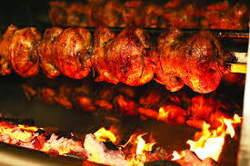
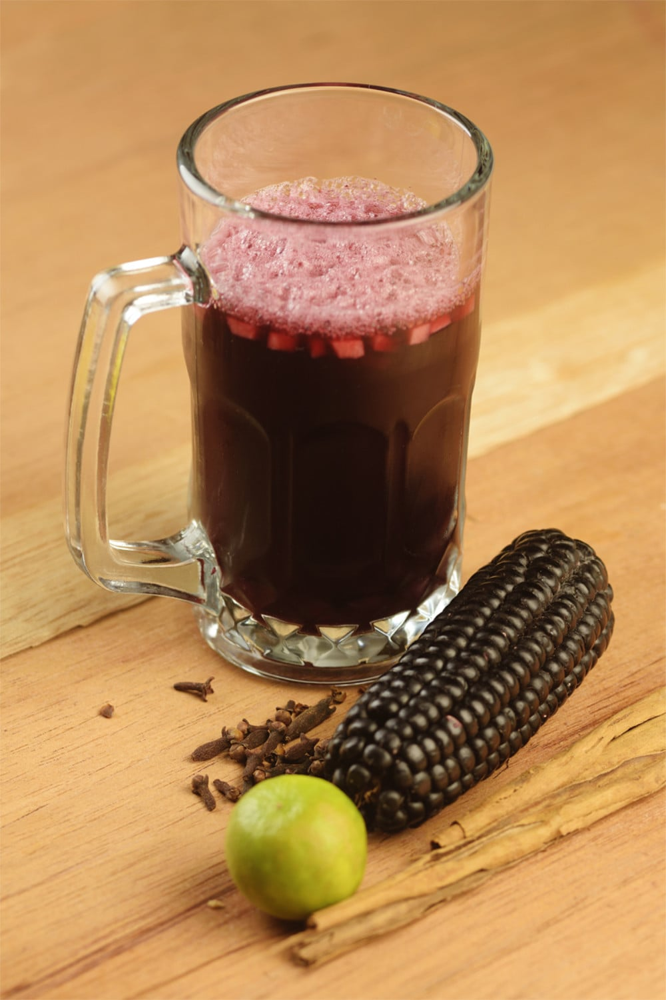
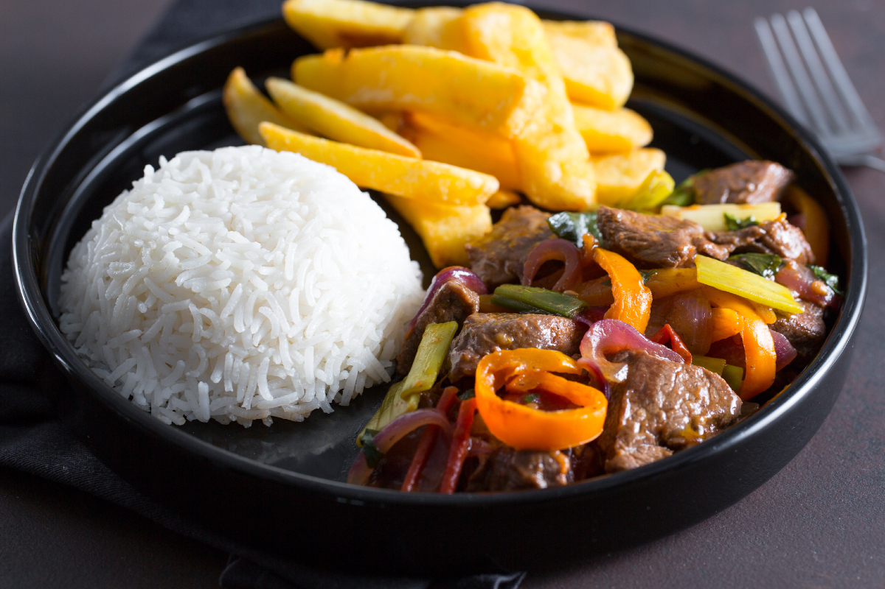

Food & Drinks Guide
Taste the flavors of Peru with iconic dishes and refreshing traditional drinks.
-
Ceviche

Peru’s signature seafood dish, made with fresh fish marinated in lime juice, red onion, chili, and herbs.
Best for: First-time foodies and couples
Address: La Mar Cebicheria, Av. Mariscal La Mar 770, Miraflores, Lima
-
Pollo a la Brasa

Charcoal-roasted chicken with a savory spice blend, often served with fries and creamy ají sauces.
Best for: Families and budget travelers
Address: Pardos Chicken, Av. Jose Pardo 620, Miraflores, Lima
-
Chicha Morada

A sweet purple corn drink infused with pineapple, cinnamon, and clove, served chilled.
Best for: Families, non-drinkers, and cultural travelers
Address: Mercado Nro. 1 de Surquillo, Paseo de la Republica 6261, Surquillo, Lima
-
Lomo Saltado

A popular stir-fry of beef, onions, tomatoes, and soy sauce, served with fries and rice.
Best for: Backpackers and comfort-food lovers
Address: Isolina Taberna Peruana, Av. San Martin 101, Barranco, Lima